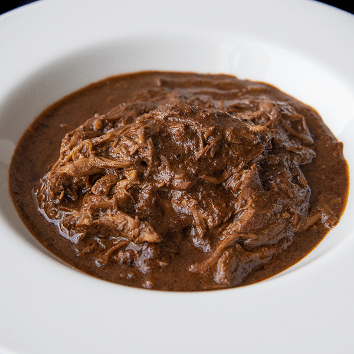

Mole

Description
Typical nahutal stew.
If you are able to find the main ingredient you are set.
Ingredients
- Chicken
- Doña maría mole sauce (or any other brand if you can find it)
- 3 Chiles anchos (sometimes called poblanos as well)
- Half a dark chocolate bar
- Sugar
Steps
- Chop the chicken into small pieces and fry it.
- Blend the mole sauce briefly.
- Place the chiles in hot water (not boiling) for a couple of minutes.
- Place the chiles in the blender with the mole and blend till there are no visible chunks left.
- Add chocolate to the mix and sugar till it tastes right, you can also use nesquik if you don't have any chocolate bars handy.
- Add the mix to the chicken and let it sit on medium fire until it has the right thickness.